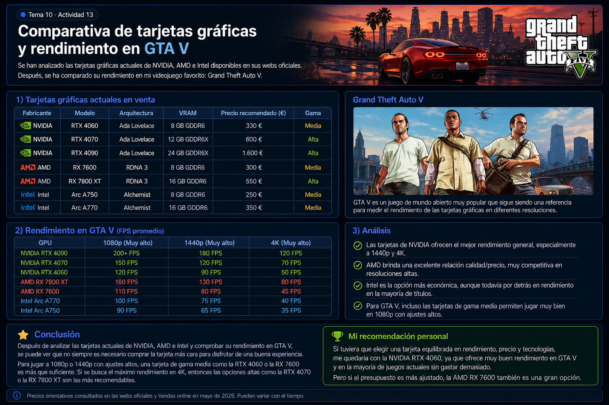

En esta actividad se analizan tarjetas gráficas actuales de NVIDIA, AMD e Intel, y se compara su rendimiento en el videojuego Grand Theft Auto V.
| Fabricante | Modelo | Arquitectura | VRAM | Precio (€) | Gama |
|---|---|---|---|---|---|
| NVIDIA | RTX 4060 | Ada Lovelace | 8 GB | 330 | Media |
| NVIDIA | RTX 4070 | Ada Lovelace | 12 GB | 600 | Alta |
| NVIDIA | RTX 4090 | Ada Lovelace | 24 GB | 1600 | Alta |
| AMD | RX 7600 | RDNA 3 | 8 GB | 300 | Media |
| AMD | RX 7800 XT | RDNA 3 | 16 GB | 550 | Alta |
| Intel | Arc A750 | Alchemist | 8 GB | 250 | Media |
| Intel | Arc A770 | Alchemist | 16 GB | 350 | Media |
Se ha elegido Grand Theft Auto V porque sigue siendo uno de los juegos más utilizados para medir rendimiento gráfico debido a su buen equilibrio entre carga gráfica y optimización.

| GPU | 1080p | 1440p | 4K |
|---|---|---|---|
| RTX 4090 | 200+ FPS | 180 FPS | 120 FPS |
| RTX 4070 | 150 FPS | 120 FPS | 70 FPS |
| RTX 4060 | 120 FPS | 90 FPS | 50 FPS |
| RX 7800 XT | 160 FPS | 130 FPS | 80 FPS |
| RX 7600 | 110 FPS | 80 FPS | 45 FPS |
| Intel A770 | 100 FPS | 75 FPS | 40 FPS |
| Intel A750 | 90 FPS | 65 FPS | 35 FPS |
Tras analizar varias GPUs y su rendimiento en GTA V, se observa que una tarjeta de gama media es suficiente para una experiencia fluida.
En mi opinión, la mejor opción calidad/precio sería una RTX 4060 o RX 7600, ya que ofrecen buen rendimiento sin necesidad de una gran inversión.